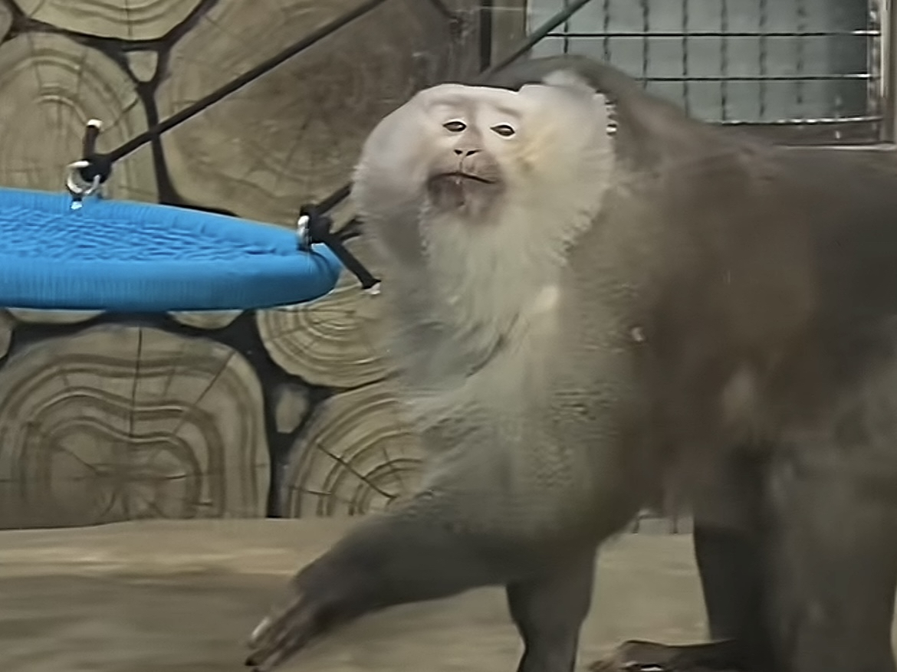

自创语言这一块/.
回家吧[憨笑]算我求你了
依旧/.[憨笑]
宝子是看着这个中文字幕读的吗[泣不成声]
学姐我们少化点妆吧好吗[憨笑]日语也少说[憨笑]
你应该学学桂哥什么平台发什么视频[微笑]
不是，去年这么萌，今年是吃毒菌子了吗❓🌚。。。
大姐这是什么物种的语言[憨笑][赞]。
是想营造出十三幺的感觉吗[愉快]
把会日语的听死了[流泪]
日专生一句没听懂[宕机][宕机]
这位名人凭一己之力创造了几十个新单词[黑脸]
原谅我年轻不懂爱~
南庭的钥匙宝子[抱抱你]
今日mvp[捂脸][赞]
姐我求你换赛道吧[流泪]素颜这么好看[流泪]
去年萌成啥了。今年精神成啥了[呲牙]。。
23秒创作了一百个新单词[泣不成声]
这是日语吗[泣不成声]像猪语[恐惧]
一根烟保安系统直接瘫痪
看过无实物表演的 第一次见无实权表演的[看]
(2005-2008基层保安) (2008-2011岗亭夜间保安) (2011-2014保安队长) (2014-2017小区保安室副室长) (2017-2020区人民保安部室长） （2020-2021区人民保安部常务副部长） （2021-2023区人民保安部党委书记） (2023-汉东省保安厅副厅长) 2025年因偷业主小丹内衣泡茶喝，造成严重恶劣影响，已移送司法机关立案侦查 2026年依法执行死刑
这不是留了一个在 拍视频吗[呲牙]
狗妈别难过了，不是还有cs 陪着你吗[捂脸]
一般会留一只的
知道难过都不留一只，
最起码给留一只[绝望的凝视][绝望的凝视][绝望的凝视]
孩子他什么都懂，他知道打妈妈，他怎么不敢打爸爸呀[听歌][听歌]
不是，给他挠痒痒啊？
他爸爸起身的动作 他就马上护自己了 所以他知道自己做的是错的 但他还是做了
小孩子很精的 他会察言观色[微笑] 还会假哭看你哄不哄[微笑]
我一般一巴掌呼脸上了[黑脸][赞]不肿也得红[赞]
挠痒痒呢[微笑]
别说小孩子不懂事，小孩比谁都懂，他就是想试探一下这样会不会被教训，小孩比谁都要精！！！
妹妹，你来营口戏曲艺术学校
宝子咱们小艺考不行千万不要错过大艺考啊[流泪]
八年侦察兵退役，在钓鱼佬面前像个新兵蛋子[看]
无人机➕热成像，阁下该如何应对[捂脸]
我也是异瞳，从小自卑到大，尤其学生时代
如果我天生异瞳，哪怕一头白发我也认了[流泪][流泪]
长大了是这样的。。
上次看到重瞳者 这次看到异瞳者 真帅啊[捂脸]
她异瞳，她还白，长大得多好看[求抱抱]
我家小朋友眼睛也好看[呲牙]
带反了

未成年开车上路-10分
这两丑猫怎么天天对峙
甚至还有小司机

晒晒我家的，
没有赞也没关系，
就想阿姨们认识一下。

我终于读懂曹操了[流泪]
啊？你已经结婚生娃了吗？当初看到你还是个学生[捂脸]
自己都还是个小孩呢[呲牙]
好大的官威
那谁来捡走我这只小奶狗呢[害羞]
评论区一群发自拍的猪[捂脸]
从一个胎盘养到这么漂亮，你真的好厉害啊[赞]
从胎盘开始养啊[发呆]
和你生的有什么区别[捂脸]
主人：打狗还得看主人，天鹅：打你也是顺手的事
《学校正在和天鹅商量赔偿细节》
天鹅：当着你的面打你的狗，当着你狗的面打你[捂脸][捂脸][捂脸]
笑死，它竟然把头发揪起来打[大笑][大笑][大笑]
笑死人了，揪头发打，打的比狗还惨[捂脸]
我看过一只凤钗，鼻子一酸，眼泪就流下来了，我感觉那就是我的东西，但是保安不让我拿[大笑]
你说她倒霉吧，被皇帝宠幸，你说她幸运吧，又冷落她，你说冷落吧，还给了名分，给了名分，你说翻身做主了吧，还打入冷宫，打入冷宫吧，你让她悄悄待着吧，还又给她带来了光，见着了儿子，你说不好吧，又被追封皇后 皇太后 ，你说好吧，又被挖出来进行展览[震惊][震惊][震惊][震惊][震惊]
自从画镜子火了之后全网都是类似的就不能来点新的[微笑]
我以为这是不好使了，瞎划拉的 还寻思挺好的话怎么瞎划拉 后面才知道原来那是签名
这个是真牛[送心]
下次剪好点
666严都不严了 别人画了6天都没你这效果好
这难道不是剪出来的纸，放在镜子上？[看]
突然困了睡了一会儿[愉快][赞]
@Toki @不困睡觉 这不是给纸剪了个洞，给不锈钢盆放下面了吗？怎么这么多人信[黑脸]
和皇帝打球的时候来了个假动作，皇帝给定了个欺君之罪[流泪]
嬴政一代
每天听两遍也算探监了[赞]
你见过寅时的咸阳嘛
原唱最近在哪发财呢[捂脸]
胡人还是打不过俑士[OK]
🐒：人类 随便一个动作都可以引起尖叫 
此刻猴子🐒内心………
就因为做了善事 所以才保住了命[抱拳]
给我姐脸都气黑了[泣不成声]
怎么办，还有什么难过的事情可以让我想一想[绝望的凝视]

她那年在肯尼亚说要出去闯一闯
他自己都没忍住笑
安蓓萨是你吗安蓓萨
除去前两名都是黑人外，赵哥国内第一[微笑]
小赵：前面俩黑人我怎么跑[捂脸][捂脸]

终于明白了，大正为啥手持国旗，为了避免误会是肯尼亚🇰🇪选手[呲牙][呲牙][呲牙]
小赵可以啊，国内第一。[耶][耶][耶]
小赵可以啊 和俩黑人同台领奖
第一名基普连正，恭喜赵哥国内第一[泪奔]
可以看的出第二名的黑哥不开心全程黑脸[看]
师徒同台，看见正哥冲线，太激动了[大哭]
站台三人中，唯一黄种人——小赵，完全可以单干[看]
进球给队友打得直抱头的是真不多见
姆巴佩：现在谁是足坛第一人？ 上帝：是你。 姆巴佩：那安东尼呢？ 上帝：很久没有人直呼我姓名了。
安东尼的比赛都不用熬夜看，早上一醒来就是一场胜利[憨笑]
抖音上除了丸子妹，瑶一瑶，小胖，王小麦，还有哪个萌娃可以看，推荐一下，我都没啥看了[捂脸]
[泪奔]俩人找不那么黄的山歌 都很难吧[泪奔][泪奔]
要分辨云南贵州广西山歌很简单，广西的对骂，贵州的情情爱爱，云南的纯黄……
都观水症了[捂脸]
在里面兼职过，虽然猫猫是流浪猫，但是工作人员买猫粮定时喂养的，那个时候每天早上去就是先喂猫，如果猫猫真的中毒了，我觉得会有人管的
应该是单纯的不想理 谁去庙里投毒就真的是坏了八辈祖宗了
那些说什么夫子庙是宗教场所没有信仰的是不知道夫子庙是什么地方[疑问]喷之前都不了解一下还觉得自己正义感爆棚[6]
我之前去过一次，里面的猫猫都挺健康的看起来，还有人会投喂
聪明毛一根儿没有，犟种毛满满当当[暗中观察]
这种才有意思 我家猫咋摸都不叫[捂脸]
小獭的爪子老凑了
不要以为我是好好先生喔[看]
这句话长得还黑，直接伤到了猫咪的自尊[捂脸]
原来那个是犟种毛啊，我家猫长满了，我一直以为全部都是聪明毛
开头：你不能哄吗？ 结尾：你快走远点啊，别给你的吵醒了
两口子真客气啊，跟同事一样
不是你不是他爸啊….是他爸也看不了俩！
N年后 大宝:小宝，你那个老人有点上不来气，快点！ 小宝:好的，好的
好消息：他家三个[泪奔][泪奔][泪奔]
你小孩儿哈哈哈哈哈哈哈，笑死我了[泪奔]你俩分的还挺清
咋的？女的就得天生哄孩子呀？！ 哦。
脏话已经到嘴边了，还有一个……要不然你再往远站一下呢……我怕这个也开始哭[泪奔]
我都准备骂爹了，一看，爹还搂一个，哈哈[捂脸]
不是，孩子就你老婆一个人生的是吧…… 那什么，你稍微走远点，我怕另一个醒了
要不然一人换一天，不然长大，一个跟爸亲，一个跟妈亲[呲牙]
本来刚想开骂看到你怀里还有一个憋回去了[干饭人]
以后你老了。 孩子说:妈妈，这个老人喘不上气了。[泪奔][泪奔]
你们两个人怎么能闯出这么大的祸[泣不成声]
昨天我的哄睡了，她的一直叫，连她带她儿子撵去客厅[微笑]
你不是有俩手吗，还哄不来啊
这小孩以后喊你叔叔，你别介意[泪奔]
Read more: